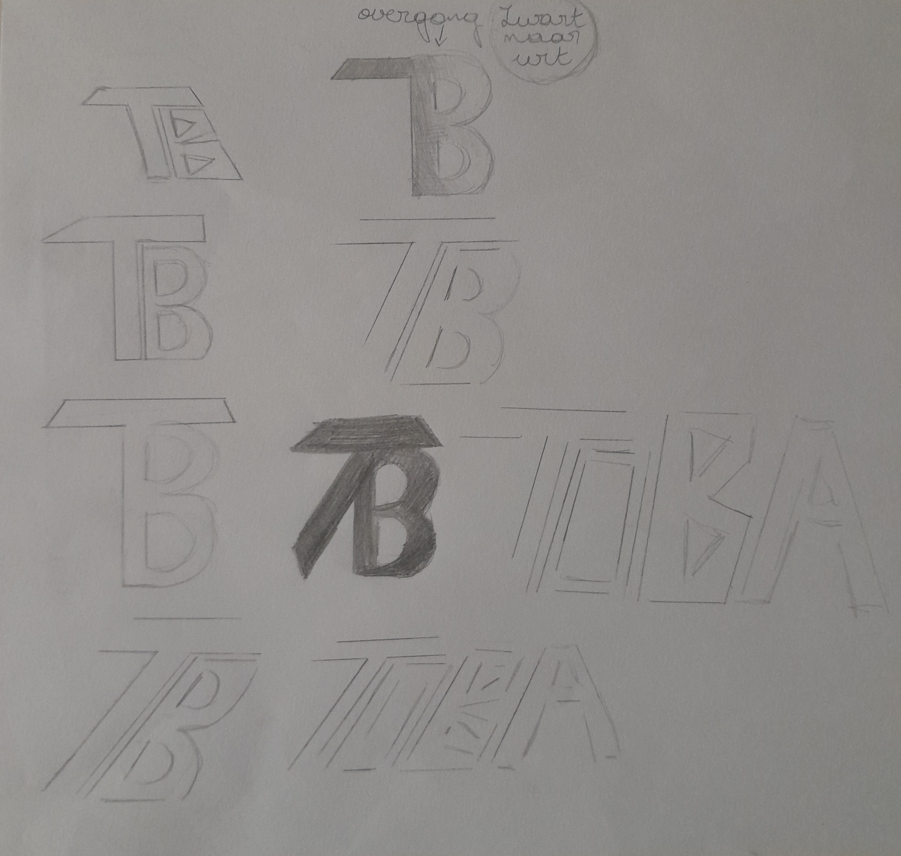
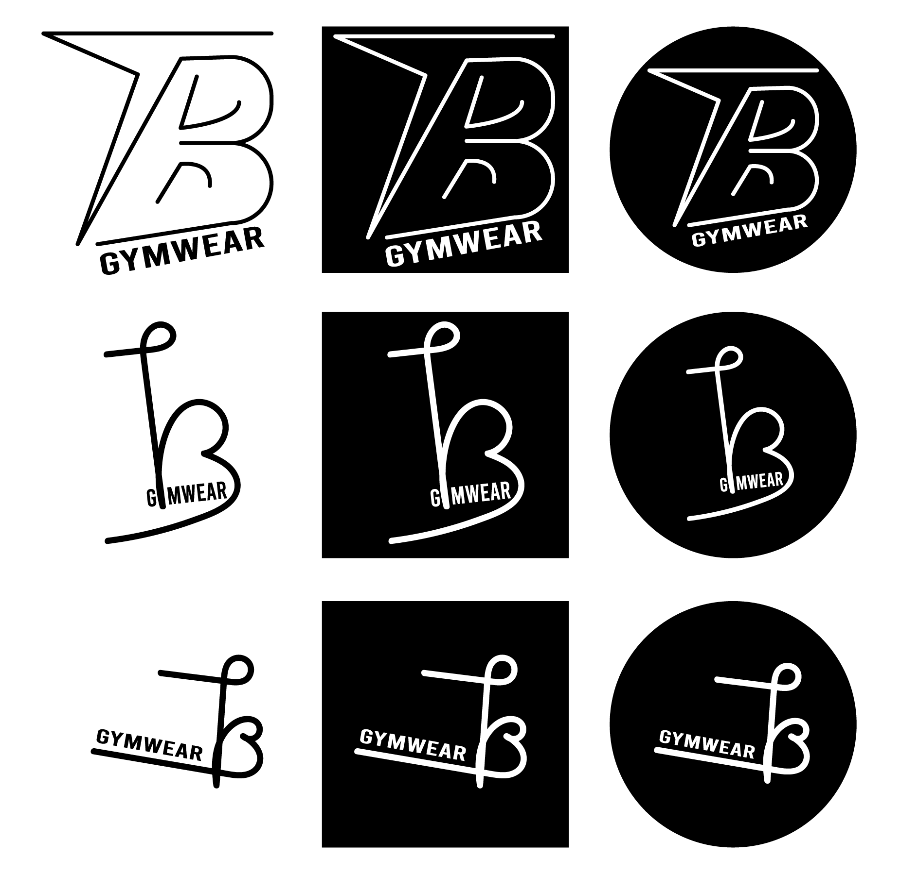
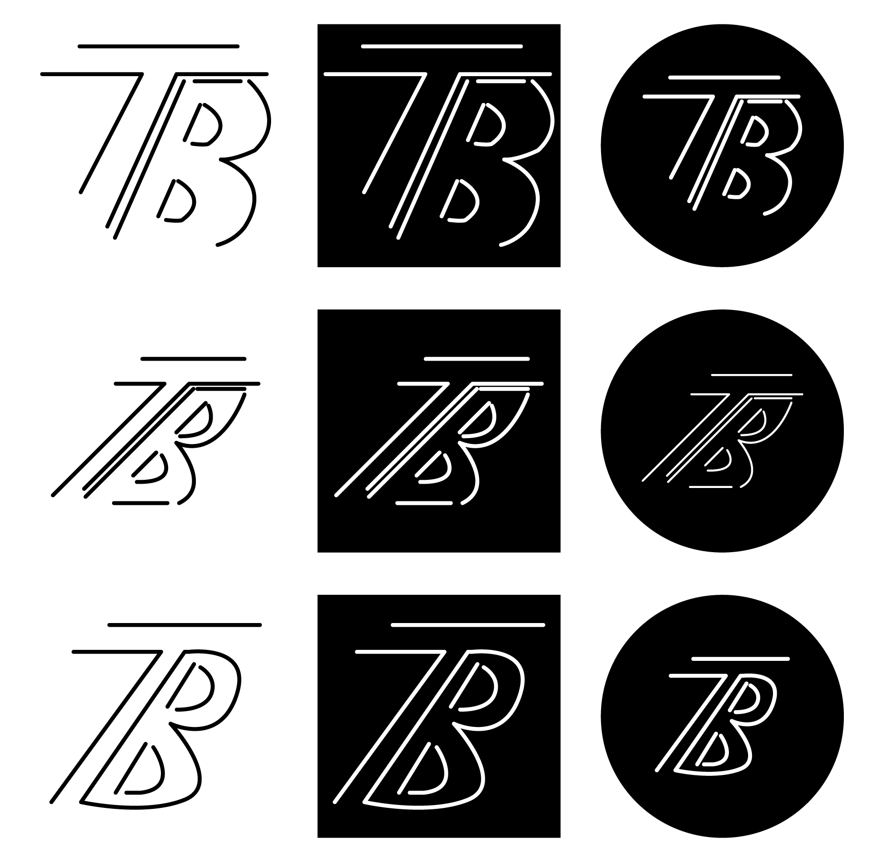
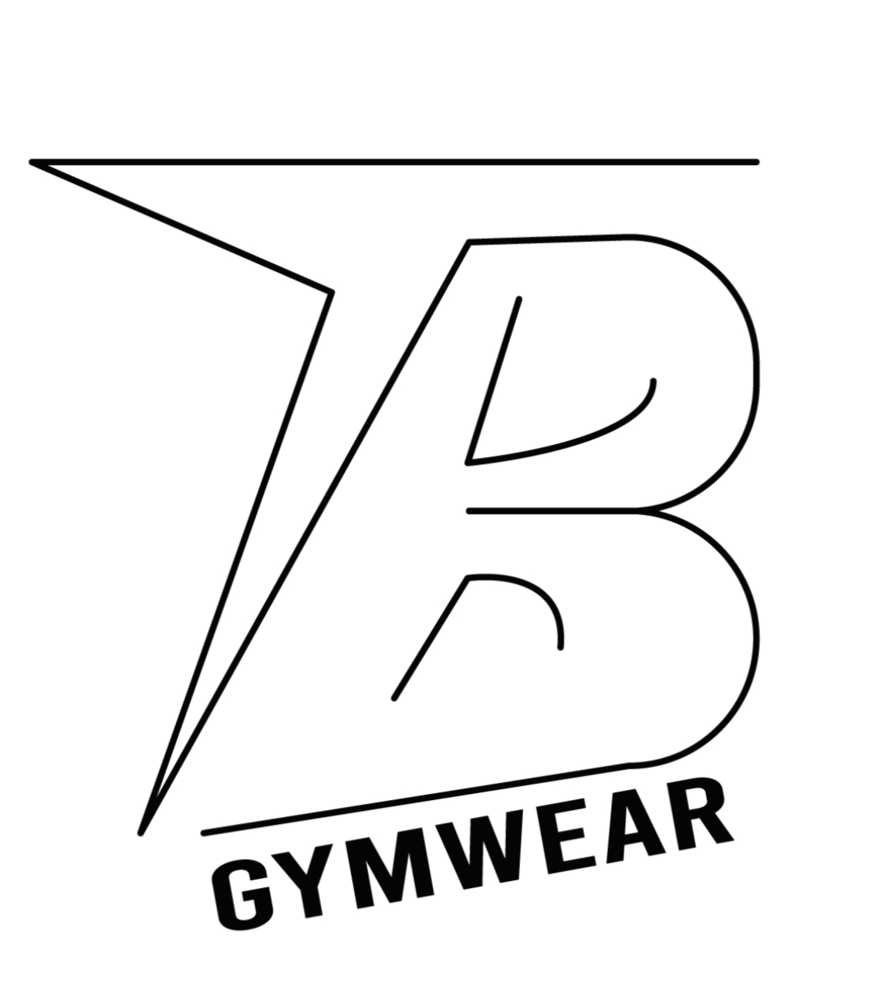

Toba
Logo – 2024
Voor Bas en Tom hebben we een logo gemaakt. Het logo is voor hun eigen kledingmerk dat ze willen starten, fitness gerelateerd. Ze wouden graag een strak zwart wit logo met de letters TB. Hier vindt u de schetsen een digitale ontwerpen. Het logo dat apart staat is een van de logo's die door zijn gestuurd naar Toba. We kregen een paar weken later te horen dat ze hier niet meer mee verder gingen. 10-09-2024 - 20-09-2024



